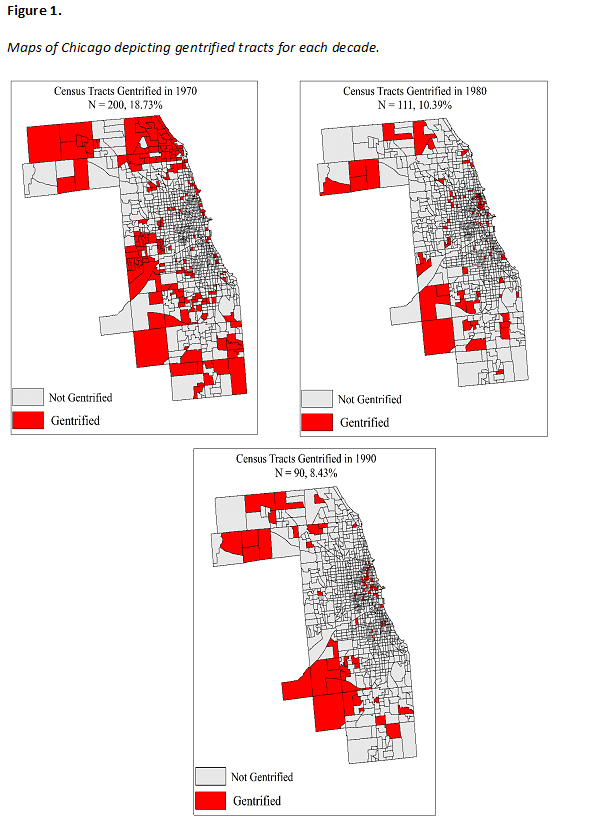

Current Projects
Jr. Argueta, J. & Eck, J. E. “Gentrification and Its Effects on Juvenile Homicides.”
Preview

×

Jr. Argueta, J., Eck J.E., & Cullen F. T. “Destruction of the Future: Urban Renewal’s Contribution to the Great Crime Rise of the 1960s.”
Preview

×